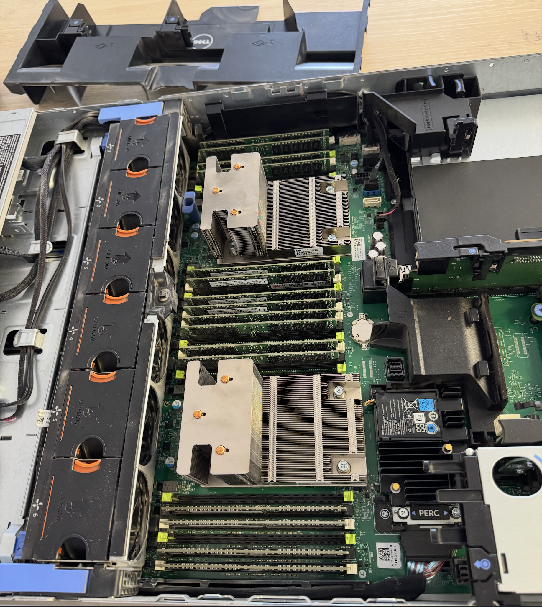
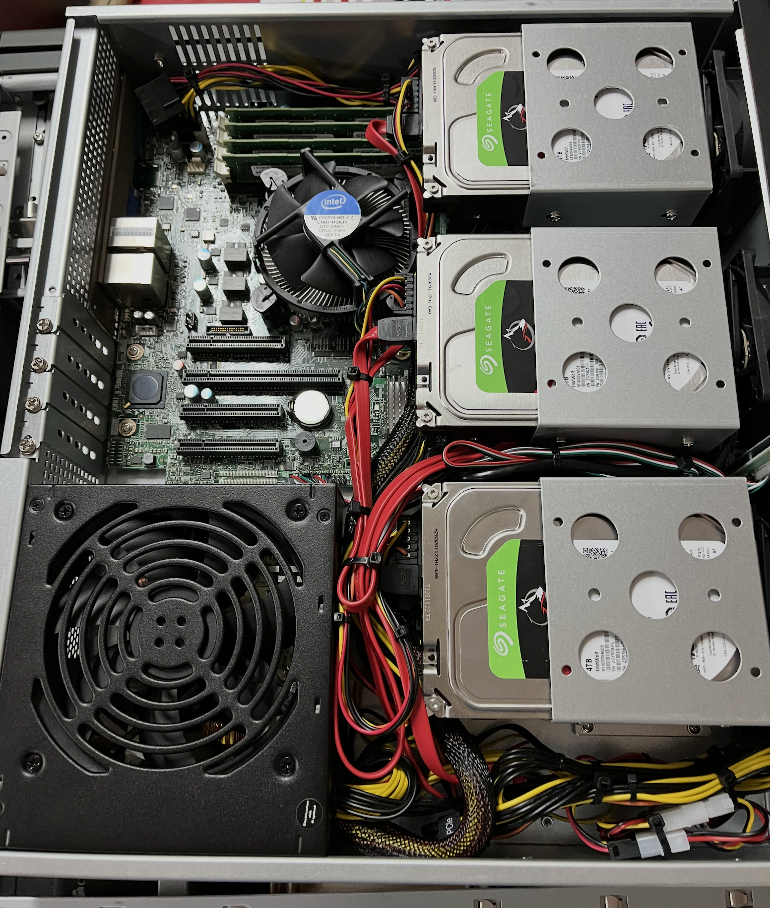
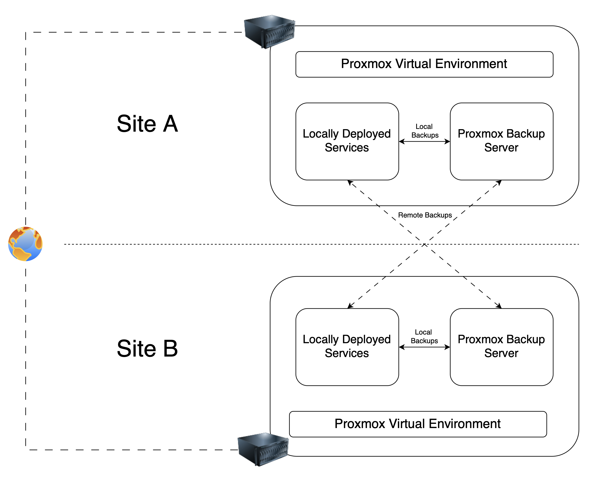

Homelab Infrastructure Platform for Self-Hosted Services & Remote Backups
2021 • Virtualization, Storage, Backup Architecture, Self-Hosting

Summary
This project documents the design and deployment of a personal infrastructure platform built on top of a Dell PowerEdge R730 running Proxmox VE, used to host self-hosted services and provide a realistic environment for systems and network engineering.
The platform is structured as a two-site deployment: a primary virtualization host for production workloads, and a secondary remote server dedicated to off-site backups via Proxmox Backup Server.
A self-hosted Nextcloud instance is used as a representative workload and is deployed using a multi-VM architecture, including a dedicated reverse proxy and DNS service.
Motivation
This homelab was designed to move beyond theoretical practice and cloud-only experimentation, towards a real infrastructure platform that behaves like a small-scale production environment.
The aim was not simply to run virtual machines, but to operate an infrastructure capable of hosting real services, supporting backup strategies, surviving failures and evolving over time. The addition of a second, remote backup server was driven by the need to avoid single points of failure and to treat data integrity as a first-class design requirement.
Requirements
Technical Requirements
- Support for multiple concurrent virtual machines with sufficient performance headroom.
- Separate performance-oriented and capacity-oriented storage tiers.
- Local and off-site backup capabilities.
- Out-of-band management on all physical servers.
- Clear separation of roles between services.
Operational Requirements
- Ease of maintenance by a single operator.
- Incremental and space-efficient backups.
- Reliable recovery of critical services.
- Predictable use of physical resources.
Design
Operational Principles
The infrastructure was designed using the same principles as small production environments: fault isolation, reproducibility, minimisation of blast radius, and avoidance of single points of failure where reasonably possible.
Physical Infrastructure


Primary site – Dell PowerEdge R730
- Intel Xeon E5-2690 v4
- 384 GB RAM
- 3 × 400 GB SLC SSD
- 3 × 12 TB HDD
Secondary site – DIY backup server
- Intel Xeon E3-1240 v3
- 32 GB RAM
- 2 × 120 GB SSD
- 3 × 4 TB HDD
The hardware selection was based on a balance between computing performance and cost. The chosen components have reached their end-of-life period in the enterprise environment, meaning that the acquisition cost was relatively low in the second-hand market, despite the hardware being reasonably recent, having PCIe 3.0 and DDR4 RAM Slots, making them compatible with modern peripherals and memory.
Both machines provide hardware-level remote management:
- Dell R730: iDRAC
- DIY server: IPMI
These out-of-band management interfaces allow full remote control of each server, including power cycling, virtual media mounting, BIOS and boot configuration, and console access even when the operating system is not reachable. In practice, this makes it possible to perform maintenance, recover from failed updates or test failure scenarios without physical access to the machines.
Storage Architecture
All storage pools are built on top of ZFS, using RAIDZ for redundancy and data integrity. ZFS provides end-to-end checksums, self-healing on read and efficient snapshots, which are used heavily for backup and rollback.
On the primary server, the layout is:
- SSD pool (ZFS RAIDZ): used for VM system disks and performance-critical workloads such as the Nextcloud application and database.
- HDD pool (ZFS RAIDZ): used for bulk data, including Nextcloud user files and the local Proxmox Backup Server datastore for short-term backups.
On the backup server, ZFS RAIDZ is also used over the HDDs to store the remote Proxmox Backup Server datastores, providing redundancy even at the off-site location.
Backup Strategy
The backup system follows a dual-layer approach, combining fast local restores with true off-site protection. In both cases, Proxmox Backup Server operates on top of ZFS and uses incremental, deduplicated backups based on VM snapshots.

-
Local backups on the Dell R730:
A Proxmox Backup Server VM runs on the primary host and performs nightly incremental backups of the most important virtual machines. These backups are stored on the local ZFS HDD pool and are intended as a high-speed safety net to roll back configuration errors, failed updates or accidental changes. -
Remote backups on the DIY server:
A second Proxmox Backup Server instance runs on the remote machine and receives nightly incremental backups over the network. These backups are focused on protecting against hardware failures of the primary server or incidents affecting the main site, and store data for critical services such as Nextcloud and supporting components.
Backups are scheduled to run every night, using incremental VM-level snapshots. This keeps backup windows predictable and allows restoring entire virtual machines or individual disks when needed. Retention policies are applied to balance disk usage and recovery capability, keeping recent backups with higher granularity and older ones in a more compact form.
Remote Backups from the secondary server towards the main server can also be performed in the event that some services want to be run locally at site B in the future.
Virtualization & Service Design
Proxmox VE is used as the virtualization layer on the primary server. To avoid monolithic designs and improve maintainability, services are split into multiple independent VMs.


Example deployment: Nextcloud stack
- Nextcloud VM: application and data services.
- NGINX VM: TLS termination and reverse proxy.
- AdGuard Home VM: DNS sinkhole and internal resolution.
The traffic flows through the NGINX reverse proxy, which manages the forwarding and the SSL certificate renewals in order to access the Nextcloud instance securely. The AdGuard DNS server redirects the requests from local clients to avoid network loops.
Implementation

Proxmox VE was installed and configured on both machines, with storage pools and networking defined prior to deploying any service.
The Nextcloud deployment was built incrementally, starting from the core application VM and expanding to a full stack with reverse proxy and DNS services. Once the system reached stability, Proxmox Backup Server was deployed locally and then remotely, with nightly incremental backup jobs configured for the key VMs based on ZFS-backed snapshots.
Results
The platform provides a stable environment for daily self-hosted services while also acting as an experimentation and learning platform. Off-site backups guarantee recovery from hardware and site-level failures, and service separation allows controlled upgrades and debugging. The infrastructure was intentionally designed to be extensible: additional Proxmox nodes or external storage can be added in the future without requiring major architectural changes.
This homelab also serves as the execution environment for other projects in this portfolio, including network experiments, service deployments and protocol testing.
What I Learned
- Infrastructure must be designed as a system, not as isolated machines.
- Service separation across VMs improves reliability, observability and maintainability.
- Off-site backups are a requirement once real data is involved; local redundancy is not enough.
- Out-of-band management (iDRAC/IPMI) changes the way failures are handled, enabling recovery even when the OS is completely unavailable.
- ZFS with RAIDZ and snapshots provides a strong foundation for both data integrity and fast rollback after configuration mistakes.
- Operating this platform day-to-day revealed practical failure modes and operational details that are not visible in purely theoretical environments.